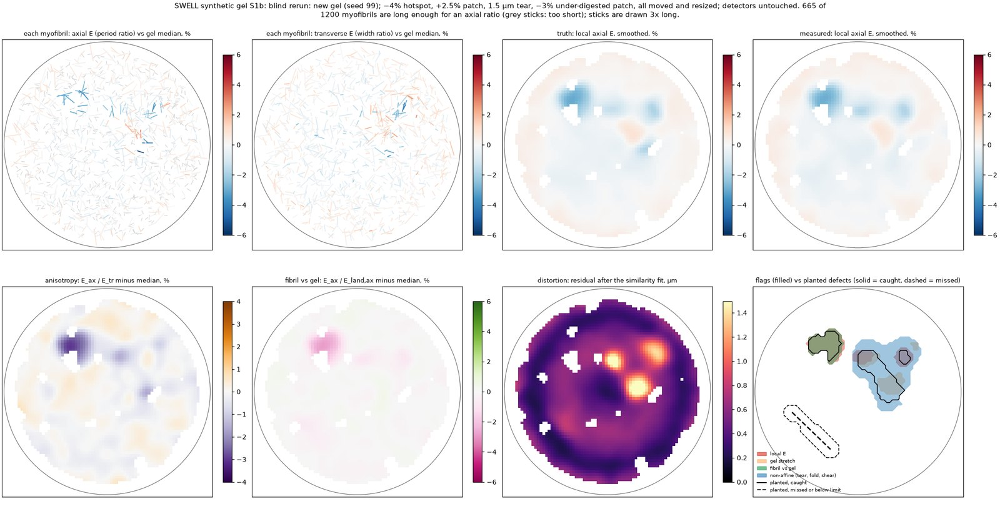
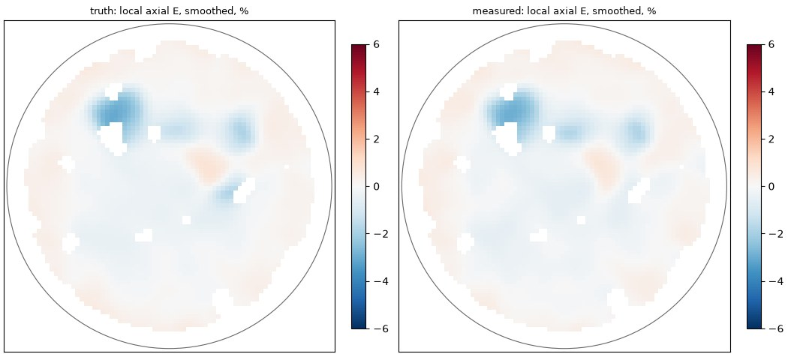
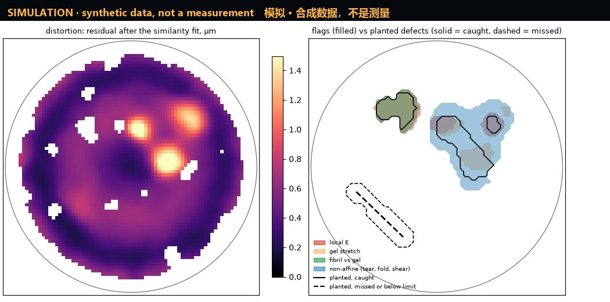
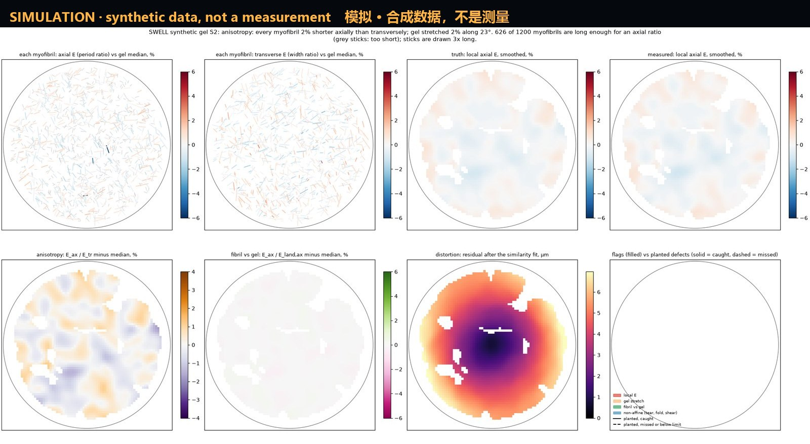

SWELL
A cheap, automated expansion microscope.
Swell a sample a few times bigger, image it with cheap optics, and let the muscle's own stripes check the result.
一台便宜的全自动膨胀显微镜：
把样本泡大几倍，用便宜的镜头拍，再用肌肉自带的条纹当尺子检查结果。
CONCEPT MODEL · simple shapes, not the engineering CAD · never built概念模型 · 简单几何示意，并非工程图纸 · 尚未造出
Invention #1 · what it is发明一号 · 这是什么
Make the sample bigger, then look with cheap glass先把样本泡大，再用便宜镜头看
SWELL is a design for a cheap, automated expansion microscope. A small piece of supermarket chicken breast is anchored inside a gel that swells in water, so the muscle is physically enlarged, first by about 4–4.8× and later by 10×. A small 3D-printed microscope then scans the swollen gel, tile by tile.
SWELL 是一台低成本、全自动“膨胀显微镜”的设计。把一小块超市鸡胸肉固定在遇水会膨胀的凝胶里，肌肉就被实打实地放大：先放大约 4–4.8×，以后做到 10×。然后由一台 3D 打印的小显微镜把泡大的凝胶一格一格扫下来。
01
Anchor and swell锚定，泡大
The muscle's proteins are tied into a sodium-acrylate gel. Heat and detergent loosen the tissue, then the gel swells in water and pulls the proteins apart, ideally by the same amount in every direction.
先把肌肉里的蛋白质“拴”进聚丙烯酸钠凝胶，再用加热和去污剂把组织松开。凝胶在水里膨胀，把蛋白质往外拉开；理想情况下，各个方向放大得一样多。
02
Image成像
A printed flexure stage moves the gel over an objective and a mono camera. Hundreds of tiles and several focus planes are stitched into one image of the whole gel.
一个 3D 打印的柔性载物台带着凝胶在物镜和黑白相机上方移动，几百个视野、好几层焦面拼成一整块凝胶的大图。
03
Let the meat check itself让肉自己当尺子
Muscle comes with rulers. Each myofibril is a chain of sarcomeres, about 1.69 µm long in supermarket breast. Comparing the stripe spacing of each myofibril before and after expansion shows, myofibril by myofibril, how much that spot swelled. Put together, these give the strain map: a picture of how evenly the whole gel expanded.
肌肉自带尺子。每根肌原纤维由一节节肌节串成，超市鸡胸肉的肌节长约 1.69 µm。比较同一根肌原纤维膨胀前后的条纹间距，就知道那个位置放大了多少，一根一根地查。把它们拼起来就是应变图：整块凝胶胀得匀不匀，一眼可见。
North star北极星目标
Chicken in, refill the chemicals, press one button. Out come images, a QC report and a draft paper, with no claim bigger than the QC proves.
放进鸡肉，补满试剂，按一个键。出来的是图像、质控报告和一篇论文草稿，而且没有一句话超出质控能证明的范围。
Status现状
simulation only仅模拟 never built从未造出
Stopped at the desk stage, before its first gate (G0). Nothing has been bought, built or run on a bench. It is free for anyone to build, change and improve.
停在了“纸面阶段”，还没过第一道关卡（G0）。没买过零件，没造过机器，也没做过一次湿实验。任何人都可以免费拿去造、去改、去做得更好。
Exists: the optics choice, a priced parts list (mostly estimates), the measuring method and a simulation that tests it on synthetic gels.
Not yet written: the wet-lab protocol, the safety pack, the mechanical and fluidic design files and the instrument software.
已有：光学方案、一份标了价的零件清单（大部分是估价）、测量方法，以及在合成凝胶上检验这套方法的模拟。
还没写：湿实验步骤、安全文件包、机械和流体的设计文件、仪器软件。
Why it works为什么行得通
Three cheap ideas三个便宜的点子
The project's design rule: chemistry does the resolution work, so the optics can stay cheap. More expansion with a modest lens beats expensive glass.
项目的设计原则：分辨率交给化学，光学就可以便宜。多胀几倍、配一个普通镜头，胜过昂贵的玻璃。
1 · Grow the sample, not the glass1 · 放大样本，而不是升级镜头
A lens cannot separate two points closer than about 0.61·λ/NA. For the 0.65 NA objective at 520 nm that is 488 nm. Expansion moves the molecules apart before the light ever reaches the lens, and the project's rule of thumb is effective resolution ≈ optical resolution ÷ E. In original-specimen units that is about 108 nm at 4.5×, and 79 nm at 10× with the 0.40 NA objective.
镜头分不开比约 0.61·λ/NA 更近的两个点。数值孔径 0.65 的物镜在 520 nm 波长下，这个距离是 488 nm。膨胀在光到达镜头之前就把分子拉开了；项目的经验公式是：有效分辨率 ≈ 光学分辨率 ÷ E。换算回原样本尺度，4.5× 时约 108 nm；换数值孔径 0.40 的物镜、放大 10× 时约 79 nm。
The lens's diffraction limit does not change; the specimen gets bigger. These are paper numbers, and still not electron microscopy: you only see what you label, and the chemistry can make its own artefacts.
镜头的衍射极限一点没变，变大的是样本。这些都是纸面计算，也远不是电镜：只能看到被标记的东西，化学步骤本身还可能制造假象。
2 · A ruler grown into the meat2 · 长在肉里的尺子
E = SLpost ÷ SLpre
Sarcomere spacing is measured on the same myofibril before and after expansion. The project's notes call the period blur-invariant: blur softens each stripe but leaves the spacing alone, so the ratio survives cheap optics. The before-image needs no label, because oblique light or crossed polarisers show the stripes.
在同一根肌原纤维上，膨胀前后各量一次肌节间距。项目笔记说这个周期“不受模糊影响”：模糊只让条纹变软，间距不变，所以便宜镜头也能用这个比值。膨胀前那张图不用染色，斜照明或正交偏振光就能看到条纹。
It replaced the textbook A-band ruler, which needs sarcomeres long enough to show an I-band: only about 13% of supermarket breast at 4×.
它取代了教科书里的 A 带尺子。那把尺子要求肌节长到能看见 I 带，超市鸡胸肉在 4× 下只有约 13% 合格。
3 · Cheap glass, just enough of it3 · 便宜镜头，刚好够用
Motic PL 40X/0.65 and PL 20X/0.40 plan objectives, one 100 mm achromat 25 mm behind the objective, and a mono IMX296 global-shutter camera (1456 × 1088 px, 3.45 µm) at £49.87. Together: 17.8× and 0.194 µm pixels, which is 1.03× Nyquist for the 4× track and 0.84× for the 10× track.
Motic PL 40X/0.65 和 PL 20X/0.40 平场物镜，物镜后 25 mm 处放一片 100 mm 消色差透镜，再配一台 £49.87 的 IMX296 黑白全局快门相机（1456 × 1088 px, 3.45 µm）。合起来是 17.8×、每像素 0.194 µm：4× 路线达到奈奎斯特采样的 1.03×，10× 路线为 0.84×。
The stock OpenFlexure lens would undersample (0.66× Nyquist), and a colour sensor wastes signal, so neither is used. The stage is a fork of the open OpenFlexure Microscope v7, run by a Raspberry Pi 5 and a Pico 2.
OpenFlexure 自带的镜头会欠采样（只有奈奎斯特的 0.66×），彩色传感器又浪费信号，所以都不用。载物台改自开源的 OpenFlexure 显微镜 v7，由树莓派 5 和 Pico 2 控制。
Built on open work: the OpenFlexure Microscope (Collins et al., 2020; build docs), expansion microscopy (Chen, Tillberg & Boyden, 2015), U-ExM (Gambarotto et al., 2019), pan-ExM (M'Saad & Bewersdorf, 2020) and TREx (Damstra et al., 2022).
站在这些公开成果的肩膀上：OpenFlexure 显微镜（Collins 等，2020；搭建文档）、膨胀显微术（Chen、Tillberg 与 Boyden，2015）、U-ExM（Gambarotto 等，2019）、pan-ExM（M'Saad 与 Bewersdorf，2020）和 TREx（Damstra 等，2022）。
The numbers, honestly数字，老实说
What the simulation says, including where it fails模拟说了什么，包括没做好的地方
Every result here comes from synthetic gels with a known truth. Synthetic data proves the analysis pipeline, not the chemistry: a real build would have to repeat every check on real gels.
这里的每个结果都来自“已知标准答案”的合成凝胶。合成数据只能证明分析流程是对的，证明不了化学；真造出来以后，每一项检查都要在真凝胶上重做一遍。
The first estimate was too optimistic, and the simulation said so第一次估计太乐观了，是模拟自己揭穿的
simulated模拟
The first desk calculation said one myofibril segment of 10 sarcomeres gives its expansion to 0.21–0.35% (RMS), for assumed before-image contrast of 5–50%. It assumed perfectly regular sarcomeres. Real ones vary by about 3% from one to the next, and under that jitter (and at some sarcomere lengths) the original estimator (a free-frequency fit) locked onto side-lobes: 10–17% of myofibrils came out wrong by 7–19%. The first full whole-gel simulation failed 15 checks.
第一次纸面计算说：一段含 10 个肌节的肌原纤维，放大倍数能测准到 0.21–0.35%（均方根误差），前提是膨胀前图像的对比度在 5–50% 之间。可这个计算假设肌节长得完全一样。真实肌节一节和一节之间差约 3%，原来的估计方法（自由频率拟合）一遇到这种抖动（以及某些肌节长度）就会锁到旁瓣上：10–17% 的肌原纤维被算错 7–19%。第一次整块凝胶模拟因此挂掉了 15 项检查。
The fix is the Z-disc ladder: the Z-discs in the expanded image define a sarcomere-by-sarcomere coordinate, and the before-image is fitted on that ladder, so the jitter is carried along instead of fought. Segments need at least 8 sarcomeres. Result: 0.3–0.6% RMS per myofibril across simulation runs, 0.32–0.48% across the four gels of the final run and 0.35% on the blind gel, with at most 0.48% of myofibrils off by more than ±2%.
修正办法叫 Z 盘梯子：用膨胀后图像里的 Z 盘标出一节一节的肌节坐标，再沿着这把“梯子”去拟合膨胀前的图像，抖动被顺着带走，而不是硬扛。每段至少要 8 个肌节。结果：各轮模拟中每根肌原纤维的误差为 0.3–0.6%（均方根），最终一轮四块凝胶为 0.32–0.48%，盲测凝胶为 0.35%；偏差超过 ±2% 的肌原纤维最多占 0.48%。
The error bar went up, and the simulation itself raised it: the method working, not failing.
误差范围变大了，而且是模拟自己调大的：这说明方法在正常工作，不是失灵。
The blind gel comes first先看盲测凝胶
Gel S1b is the independent test: a new synthetic gel with a new random seed, every planted defect moved and resized, and nothing tuned after it ran. It holds 1,200 myofibrils in a 1.5 mm punch expanded 4.5×.
S1b 号凝胶是独立检验：换了随机种子的新合成凝胶，所有埋进去的缺陷都换了位置、改了大小，跑完以后什么参数都没再调。它在一块 1.5 mm 的胶片里放了 1,200 根肌原纤维，放大 4.5×。
| Planted defect (blind gel)埋入的缺陷（盲测凝胶） | Size大小 | Flagged by its own detector被对应探测器标出 | Flagged by any detector被任一探测器标出 | Result结果 |
|---|---|---|---|---|
| Under-expanded hotspot局部膨胀不足 | −4% | 100% | 100% | PASS通过 caught抓到 |
| Under-digested patch消化不足区 | −3% | 100% | 100% | PASS通过 caught抓到 |
| Stretched patch被拉伸的区域 | +2.5% | 51% | 100% | FAIL失败 flagged everywhere, but by the non-affine detector: right place, wrong label整片都被标出了，但标它的是“非仿射”探测器：位置对，类别错 |
| Tear裂缝 | 1.5 µm | never crosses the detector threshold信号始终没超过探测阈值 | BELOW LIMIT低于下限 missed; the limit is ~2 µm漏掉；探测下限 ~2 µm | |
Pass rule: the detector named for the defect must flag at least 80% of its area.
合格标准：该缺陷对应的探测器要标出至少 80% 的面积。
The two misses, plainly: a mild +2.5% stretch is caught under the wrong label, and a 1.5 µm tear is too small to see. Across all four synthetic gels, 31 of 33 checks pass, 1 fails and 1 is below the detection limit. Three of the gels (S0, S1, S2) are development gels, because the detectors were fixed while looking at S1; S1b is the only independent test. On development gel S1, a 2 µm tear was flagged over 89% of its area.
两处没做好，直说：轻微的 +2.5% 拉伸被标错了类别，1.5 µm 的裂缝太小看不出来。四块合成凝胶合计，33 项检查中 31 项通过，1 项失败，1 项低于检测下限。其中 S0、S1、S2 三块是“开发用”凝胶：探测器是对着 S1 调好的，所以只有 S1b 算独立检验。在开发凝胶 S1 上，一条 2 µm 的裂缝被标出了 89% 的面积。



Coverage: about half the myofibrils carry the axial ruler覆盖率：约一半肌原纤维能用轴向尺子
Every myofibril gets the transverse (width) ruler and the landmark (position) ruler. Only segments of at least 8 sarcomeres get the axial period ratio: 665 of 1,200 (55%) in the blind gel and 626 of 1,200 (52%) in the development gels. In real meat this would depend on how gently the tissue is homogenised.
每根肌原纤维都能用横向（宽度）尺子和地标（位置）尺子。但只有至少 8 个肌节长的片段才能算轴向周期比：盲测凝胶的 1,200 根里有 665 根（55%），开发凝胶为 626 根（52%）。换成真肉，这取决于打碎组织时有多温柔。
Transverse isotropy and the shape-aware ruler横向各向同性与“认形状”的尺子
A gel can swell evenly along a myofibril and unevenly across it. So the pass criteria include transverse isotropy, Eax ÷ Etr − 1 within ±3% (95% CI, n ≥ 200), and the axial and transverse factors are always reported separately. On the blind gel the transverse factor per myofibril is 0.00% ± 0.50% (bias ± SD).
凝胶可能顺着肌原纤维胀得很匀，横着却不匀。所以合格标准里加了横向各向同性：Eax ÷ Etr − 1 落在 ±3% 以内（95% 置信区间，n ≥ 200），轴向和横向的放大倍数永远分开报告。盲测凝胶上，每根肌原纤维的横向放大倍数偏差为 0.00% ± 0.50%（偏差 ± 标准差）。
The width ruler is the fragile one: it needs a model of each cross-section. A boxy cross-section fitted as an ellipse is off by −9.0% to −15.2%, depending on the before-image method. So the pipeline measures each myofibril's cross-section shape from the expanded z-stack, and the bias drops to ≤ 0.04%.
宽度尺子最娇气：它得知道每根纤维的横截面长什么样。把方形截面当椭圆来拟合，会差 −9.0% 到 −15.2%（取决于膨胀前图像的拍法）。所以流程改成从膨胀后的 z 叠层里直接量每根纤维的截面形状，偏差降到 ≤ 0.04%。
Blur calibration still matters. If the before-image blur is calibrated 5% too wide, the bias is 1.05–3.23%, so the first gate calibrates it to ±2%. At that target the worst bias is 1.09%, so the gate holds with margin: 1% + 1.09% = 2.09%, inside ±3%.
模糊标定照样要紧。膨胀前图像的模糊如果标宽了 5%，偏差就是 1.05–3.23%；所以第一道关卡要求标定到 ±2%。在这个精度下最坏偏差是 1.09%，所以关卡还留有余量：1% + 1.09% = 2.09%，在 ±3% 之内。
On development gel S2, a planted 2% anisotropy is recovered as −2.12% [−2.37%, −1.87%] (truth −2.03%), and a planted gel stretch of 2.00% along 23° is found by the orientation test as 2.03% along 23°.
在开发凝胶 S2 上，埋入的 2% 各向异性被测成 −2.12% [−2.37%, −1.87%]（真值 −2.03%）；埋入的整体拉伸（沿 23° 方向 2.00%）被方向检验测成沿 23° 方向 2.03%。
Development gel S2: anisotropy and gel stretch开发凝胶 S2：各向异性与整体拉伸

Optics, on paper光学，纸面结果
simulated模拟
Sampling: 0.194 µm pixels against a Nyquist pixel of 0.200 µm, i.e. 1.03× Nyquist; the 10× track gets 0.84×.
Focusing into water: a dry objective imaging into a water gel suffers spherical aberration, but the Gibson–Lanni model gives the 4× objective a Strehl ratio of at least 0.98 over 0–12 µm; worst over the specimen depth 0.99 (4×) and 1.00 (10×). Lateral PSF width 0.412 µm.
采样：像素 0.194 µm，奈奎斯特要求 0.200 µm，即奈奎斯特的 1.03×；10× 路线为 0.84×。
对焦进水里：干物镜看进水凝胶会有球差，但 Gibson–Lanni 模型算出 4× 物镜在 0–12 µm 深度内斯特列尔比不低于 0.98；在样本厚度范围内最差为 0.99（4×）和 1.00（10×）。横向点扩散函数宽 0.412 µm。
simulated模拟
One gel at 4.5×: 804 tiles per plane × 10 planes, 25.5 GB of raw data, 1.3–2.2 h of scanning.
一块放大 4.5× 的凝胶：每层 804 个视野 × 10 层，原始数据 25.5 GB，扫描 1.3–2.2 h。
Model limits: magnification comes from a thin-lens model (a ray-traced model was planned but not done), and the camera's noise figures are assumptions not yet checked against a datasheet.
模型的局限：放大倍数用的是薄透镜模型（原计划换成光线追迹模型，没来得及做），相机噪声参数是假设值，还没对照数据表核实。
open problem未解决
Not enough light in the worst case最坏情况下光不够
Widefield optics see the whole thickness of an expanded myofibril, so out-of-focus light adds a background pedestal. At the lowest labelling simulated (0.5% of amines) on a 2 µm myofibril, the signal-to-noise ratio falls 12.4 → 5.6 against a target of 10. Reaching the target needs 3.2× the dose (exposure × irradiance), which costs bleaching. Before the pedestal was modelled, the first pass had given 12–42 across the labelling range.
宽场光学会把膨胀后肌原纤维的整个厚度都收进来，焦外的光叠成一层背景“底座”。在模拟的最低标记率（0.5% 的氨基被标记）、2 µm 粗的肌原纤维上，算上这层底座后，信噪比的变化是 12.4 → 5.6，而目标是 10。要达标得把光剂量（曝光时间 × 光强）加到 3.2×，代价是荧光漂白。没算这层底座之前，第一轮估计在不同标记率下为 12–42。
Not solved. The named routes were a dose budget, deconvolution and a dye titration.
没有解决。已经点名的出路有三条：光剂量预算、反卷积、染料浓度梯度试验。
Parts and money零件和钱
Cheap, but not yet as cheap as the target便宜，但还没便宜到目标
Prices are in pounds including VAT, read on 2026-10-09. Listed means read on a supplier page that day; estimate means not yet priced. Most lines are still estimates, so treat the totals as ranges, not quotes.
价格单位为英镑、含增值税，读取于 2026-10-09。标价指当天在供应商页面上读到的价格；估价指还没正式询价。大部分条目仍是估价，所以总数只能当区间看，不能当报价。
target ≤ £500 · 17 of 20 lines are estimates目标 ≤ £500 · 20 条中 17 条是估价
target ≤ £650, ceiling £1,000 · 22 of 26 lines are estimates目标 ≤ £650，上限 £1,000 · 26 条中 22 条是估价
Honest reading: the box is over its targets, and the top of the build range breaks the £1,000 ceiling. Supplier-listed prices cover only £216 of the core and £328 of the build. The levers named but never pulled: a coloured-glass emission filter with one cheap dichroic (filters are the largest line), a generic tube lens, and a generic 20X objective for the 10× track.
老实说：整机超出了目标，整机区间的上端还突破了 £1,000 的上限。有供应商标价的部分，核心只占 £216，整机只占 £328。点过名、但没来得及用的省钱办法：用有色玻璃发射滤光片配一片便宜的二向色镜（滤光片是最贵的一项）、通用筒镜、10× 路线改用通用 20X 物镜。
| Line编号 | Part零件 | Scope范围 | GBP英镑 | Basis依据 |
|---|---|---|---|---|
| H-15 | Filter set, GFP class (excitation, dichroic, emission)GFP 类滤光片组（激发、二向色、发射） | core核心 | £100–£250 | estimate估价 |
| H-10 | Objective A: Motic PL 40X/0.65 plan achromat (€109 ex VAT)物镜 A：Motic PL 40X/0.65 平场消色差（不含增值税 €109） | core核心 | £112 | listed标价 |
| H-21 | Objective B: Motic PL 20X/0.40 plan achromat物镜 B：Motic PL 20X/0.40 平场消色差 | build整机 | £112 | listed标价 |
| H-05 | Raspberry Pi 5, 4 GB树莓派 5（4 GB） | core核心 | £54–£60 | listed标价 |
| H-09 | Main camera: IMX296 mono global shutter (Waveshare)主相机：IMX296 黑白全局快门（Waveshare） | core核心 | £49.87 | listed标价 |
| H-11 | Tube lens: achromatic doublet, f = 100 mm筒镜：消色差双合透镜，焦距 100 mm | core核心 | £45–£70 | estimate估价 |
| H-23 | Peristaltic pumps (reagent lines and waste)蠕动泵（试剂管路和废液） | build整机 | £40–£75 | estimate估价 |
| H-19 | Certified low-voltage PSU, buck converter, fuses, relay latch, wiring认证低压电源、降压模块、保险丝、继电器锁存、线材 | core核心 | £30–£45 | estimate估价 |
| H-12 | Overview camera: Raspberry Pi Camera Module 3 + close-up lens全景相机：树莓派 Camera Module 3 + 近摄镜 | core核心 | £25–£32 | estimate估价 |
| H-13 | Excitation LED (blue) + constant-current driver激发 LED（蓝光）+ 恒流驱动 | core核心 | £12–£20 | estimate估价 |
| H-18 | Black box + lid microswitch (LED interlock)黑盒 + 盖子微动开关（LED 联锁） | core核心 | £10–£15 | estimate估价 |
| H-03 | 28BYJ-48 steppers with ULN2003 boards28BYJ-48 步进电机 + ULN2003 驱动板 | core核心 | £10–£14 | estimate估价 |
| H-01 | OpenFlexure v7 printed parts (PLA)OpenFlexure v7 打印件（PLA） | core核心 | £8–£12 | estimate估价 |
| H-20 | Drip ring + objective sleeve + leak sensor接水环 + 物镜护套 + 漏液传感器 | core核心 | £6–£10 | estimate估价 |
| H-04 | Raspberry Pi Pico 2 (motor, LED and safety controller)树莓派 Pico 2（电机、LED 和安全控制） | core核心 | £5–£7 | estimate估价 |
The main parts only; the full list has more small lines. Euro and dollar prices were converted at assumed rates (EUR 0.86, USD 0.75).
这里只列主要零件，完整清单还有不少小件。欧元和美元价格按假设汇率换算（EUR 0.86, USD 0.75）。
Everything else a first build would need第一次造还需要的其他开销
| Basket类别 | GBP英镑 | Estimated / all lines估价条目 / 全部条目 |
|---|---|---|
| Calibration: stage micrometer, resolution target, fluorescent beads, flat-field reference, water beads标定：台微尺、分辨率靶、荧光微球、平场参考片、水晶珠 | £203–£495 | 5 / 5 |
| Tools, only if the lab has none: 3D printer, soldering iron, multimeter, hand tools工具（实验室没有才买）：3D 打印机、烙铁、万用表、手工工具 | £304–£334 | 2 / 4 |
| Operations: data drive, host-lab access for six months (community-lab case), waste route运行：数据硬盘、六个月实验室使用费（按社区实验室算）、废液处理 | £320–£500 | 2 / 3 |
| Wet lab, bought through a host lab: reagents and consumables湿实验（经由实验室购买）：试剂和耗材 | £750–£1,250 | 3 / 3 |
| Whole project, excluding tools整个项目（不含工具） | £2,000–£3,317 |
Where the chemistry happens化学部分在哪做
An example lab shortlist: Cambridge, UK实验室候选清单示例：英国剑桥
Anyone can build the instrument. The gel chemistry needs a proper lab with a fume hood. This shortlist was made for a build planned around Cambridge, UK, ranked by cost and then by access. Prices are as listed on the organisations' public pages on 2026-10-09.
仪器谁都能造，但凝胶化学必须在带通风橱的正规实验室里做。这份清单是为一个计划在英国剑桥一带开展的项目整理的，先按费用、再按准入难度排序。价格取自各机构公开网页，读取于 2026-10-09。
None of these organisations has been contacted, and none has seen, reviewed or endorsed this project. Enquiries were drafted, then cancelled when the project stopped; nothing was sent. Details may have changed since they were read.
以下机构一个都没联系过，也没有任何一家看过、评审过或认可过这个项目。询问信写好了草稿，项目一停就取消了，一封都没发。信息读取之后可能已有变化。
| # | Organisation机构 | Price as listed公开价格 | Six months六个月 | Why it ranks here排在这里的原因 |
|---|---|---|---|---|
| 1 | Makespace + Biomakespace community lab; bio-labs on the Addenbrooke's site社区实验室；生物实验室在 Addenbrooke's 园区 |
£40/month/月 | £240 | Cheapest by far, all equipment included, personal or commercial use. But it needs a tour, an induction, bio-lab safety training and an approved project proposal; its fume hood and its rules for CMR reagents are unknown; and the bio-lab's own websites did not load when checked.最便宜，含全部设备，个人和商业用途都可以。但要先参观、入门培训、生物实验室安全培训，项目方案还得获批；有没有通风橱、允不允许 CMR 试剂都不清楚；生物实验室自己的网站当时打不开。 |
| 2 | A University of Cambridge department, as an independent visitor剑桥大学某个系，以独立访客身份 e.g. Physiology, Development & Neuroscience (2026 visitor policy)例如生理、发育与神经科学系（2026 年访客政策） |
£600/month/月 | £3,600 | A proper departmental lab, where fume hoods, waste routes and stores are expected. It needs a named academic host, a project plan and at least 3 months' notice; the fee is usually billed annually (up to £7,200), with waivers possible for short visits. The listed rate is the academic wet-bench fee; the industry rate is higher.正规的院系实验室，通风橱、废液渠道、库房一般都有。但需要一位具名的学术接待人、一份项目计划，并至少提前 3 个月申请；费用通常按年预收（最多 £7,200），短期访问可能减免。所列价格是学术访客的湿实验台费用，企业价更高。 |
| 3 | EpiCentre, Haverhill shared CL2 bench rental共享二级防护实验台出租 |
from £1,400/month/月起 | £8,400 | Fume hoods, waste removal and goods-in are stated on its page, with contracts from 1 month. The most expensive, and it asks companies for £10M public liability insurance; terms for individuals are unknown.网页上写明有通风橱、废液清运和收货，合同 1 个月起签。最贵，而且要求公司有 £10M 公众责任险；对个人的条件不清楚。 |
| 4 | Babraham Research Campus LiveLabs incubator co-working lab孵化器共享实验室 |
on application需询价 | ? | Membership of at least 3 months, aimed at early-stage companies; price unknown.会员期至少 3 个月，主要面向初创公司；价格不明。 |
| 5 | Co-Labs by Journey bench rental; no public link recorded实验台出租；未记录公开链接 |
on application需询价 | ? | Leases of at least 6 months, aimed at companies; price unknown.租期至少 6 个月，面向公司；价格不明。 |
University core facilities in Cambridge were checked too. They sell instrument time to outside users on custom quotes, not bench space, so they are not on the list.
剑桥大学的公共仪器平台也查过：它们按单独报价向外部用户出售仪器机时，不出租实验台，所以没有列入。
Finding a suitable lab anywhere在任何地方找合适的实验室
- A fume hood, or local exhaust ventilation, for weighing powders and for the formaldehyde and monomer steps.有通风橱或局部排风，用来称粉末、做甲醛和单体相关步骤。
- Written permission for these reagents: acrylamide, bis-acrylamide and formaldehyde (CMR substances), APS, TEMED, sodium acrylate, an SDS buffer at 95 °C and NHS-ester dyes in DMSO.书面同意使用这些试剂：丙烯酰胺、双丙烯酰胺和甲醛（CMR 物质），过硫酸铵、TEMED、丙烯酸钠、95 °C 的 SDS 缓冲液，以及溶在 DMSO 里的 NHS 酯染料。
- A hazardous-waste route for liquids and polymerised gels, and what it costs.液体废物和聚合后凝胶的危废处理渠道，以及费用。
- An ordering route: the lab orders the CMR reagents and recharges you, because suppliers may not sell them to private individuals. Never present yourself as a business if you are not one.采购渠道：由实验室代购 CMR 试剂再向你收费，因为供应商可能不卖给个人。不是公司就绝不要冒充公司。
- Lockable chemical storage, and fridge and freezer space at 4 °C and −20 °C.可上锁的化学品柜，以及 4 °C 冷藏和 −20 °C 冷冻的空间。
- Basic equipment: pipettes, a mini-centrifuge, a heat block reaching 95 °C, a 37 °C incubator, a balance and a pH meter.基本设备：移液器、迷你离心机、能到 95 °C 的加热块、37 °C 培养箱、天平、pH 计。
- Bench space for a small low-voltage microscope for a few months, under the lab's own induction, risk assessments and lone-working rules.能放一台小型低压显微镜几个月的台面，并遵守该实验室自己的入门培训、风险评估和单人作业规定。
- Then choose: among the labs that confirm the first four points, the cheapest that can start within 3 months.最后挑选：在前四条都确认没问题的实验室里，选能在 3 个月内开始的最便宜的一家。
Safety安全
The chemistry is the dangerous part危险的是化学部分
Wet work only in a proper lab with a fume hood. Nothing chemical at home.湿实验只在带通风橱的正规实验室里做。家里不碰任何化学品。
Several reagents are carcinogens or mutagens (CMR substances). Not in a kitchen, a garage or a spare room. Follow the host lab's induction and risk assessments, and check every hazard below against the supplier's safety data sheet: this is a starting list from the project's notes, not a risk assessment.
好几种试剂会致癌或致突变（CMR 物质）。厨房、车库、空房间都不行。遵守所在实验室的入门培训和风险评估，并对照供应商的安全数据表（SDS）逐条核对下面的危害：这只是项目笔记里的起步清单，不是风险评估。
| Reagent试剂 | Hazard危害 | Handling in the project's notes项目笔记里的处理方式 |
|---|---|---|
| Acrylamide丙烯酰胺 | Toxic; Cat. 1B carcinogen and mutagen; neurotoxic; absorbed through skin.有毒；1B 类致癌物和致突变物；神经毒性；可经皮肤吸收。 | Buy as a 40% solution, never as powder. Double nitrile gloves, goggles, lab coat; ventilated area.买 40% 溶液，绝不买粉末。双层丁腈手套、护目镜、实验服；在通风处操作。 |
| Bis-acrylamide双丙烯酰胺 | Suppliers classify it as a mutagen and carcinogen (Cat. 1B) with repeated-exposure toxicity; a harmonised Muta 1B entry is reported, but supplier sheets disagree.供应商将其列为致突变物和致癌物（1B 类），并有反复接触毒性；有资料称其统一分类为 1B 类致突变物，但各家安全数据表说法不一。 | Treat as CMR. Buy as a solution.按 CMR 物质对待。买溶液。 |
| Formaldehyde甲醛 | Cat. 1B carcinogen; sensitiser; toxic by inhalation.1B 类致癌物；致敏；吸入有毒。 | Methanol-free sealed ampoules, opened only with ventilation; small volumes. The overnight anchoring step runs in a sealed box.用无甲醇的密封安瓿，只在通风条件下打开；用量要小。过夜锚定步骤放在密封盒里进行。 |
| APS (ammonium persulfate)过硫酸铵（APS） | Oxidiser; respiratory sensitiser.氧化剂；呼吸道致敏。 | Weigh into closed, pre-tared vials with minimal dust. Stock made as 10% w/v in batches of at least 1 g, aliquoted and frozen.称进预先去皮的密闭小瓶，尽量不起粉尘。母液按 10% w/v 配制，每批至少 1 g，分装冷冻。 |
| TEMED | Flammable, corrosive, strong-smelling.易燃、腐蚀性、气味强烈。 | Small quantities, kept closed, at room temperature; never in a domestic fridge.少量，盖紧，室温存放；绝不放家用冰箱。 |
| Sodium acrylate丙烯酸钠 | Irritant. Purity matters.刺激性。纯度很关键。 | Weighed as a powder in closed vials. Buy high purity and reject yellow solutions. Making it from acrylic acid adds corrosive, flammable and exothermic hazards: fume hood only.以粉末形式在密闭小瓶里称量。买高纯度的，发黄的溶液不要。用丙烯酸自己中和会多出腐蚀、易燃和放热的危险：只能在通风橱里做。 |
| SDS buffer at 95 °C95 °C 的 SDS 缓冲液 | Irritant; scald hazard.刺激性；烫伤风险。 | Screw-cap or lid-lock tubes in a lidded heat block, never on the microscope stage.用螺旋盖或锁扣盖的管子，放进带盖加热块；绝不放到显微镜载物台上。 |
| DMSO (dye solvent)DMSO（染料溶剂） | Carries dissolved chemicals through skin.会把溶解在里面的化学品带透皮肤。 | Always gloves.始终戴手套。 |
| Triton X-100 | Harmful to aquatic life.对水生生物有害。 | Collected as waste, never down the drain.收集为废液，绝不倒进下水道。 |
| Sodium azide叠氮化钠 | Not used.不使用。 | Gels are stored in water at 4 °C instead.凝胶改为泡在 4 °C 的水里保存。 |
| Raw chicken生鸡肉 | Campylobacter and Salmonella risk until fixed.固定之前有弯曲杆菌和沙门氏菌风险。 | Food-hygiene practice; dedicated tools never return to a kitchen.按食品卫生规范处理；专用工具不再回到厨房。 |
| Water beads (practice gels)水晶珠（练习用凝胶） | Ingestion hazard.误吞危险。 | Keep sealed and away from children and pets.密封保存，远离儿童和宠物。 |
The law (UK, as the project's notes read it)法规（英国，按项目笔记的理解）
UK REACH Annex XVII (entries 28–30) means CMR substances can't be supplied to the general public. This covers acrylamide and, by Reg. (EU) 2018/675 as retained in UK law, formaldehyde. So anyone can build the instrument, but the chemistry needs professional-user access: a lab, a community lab or a genuine business. Never misrepresent yourself to a supplier.
英国 REACH 法规附件 XVII（第 28–30 条）规定 CMR 物质不得供应给普通公众。这包括丙烯酰胺，以及经 (EU) 2018/675 号条例纳入、并保留在英国法律中的甲醛。所以仪器谁都能造，化学部分却需要专业用户渠道：实验室、社区实验室，或真实存在的企业。绝不能向供应商谎报身份。
Hazardous waste goes through a licensed route with records; nothing hazardous goes down the drain or into household bins. Research use only: no diagnostic claims, no human material, no live animals. This is a summary, not legal advice; check the current rules where you are.
危险废物走有资质的渠道并留存记录；任何危险物都不进下水道、不进生活垃圾。仅限科研用途：不做任何诊断声明，不用人体材料，不用活体动物。这只是摘要，不是法律意见；请以你所在地的现行法规为准。
Never bypassed, in code or in design无论代码还是设计，绝不绕过
- Lid interlock: opening the lid cuts the excitation LED in hardware.盖子联锁：一开盖，硬件直接切断激发 LED。
- Leak cutoff: a leak trip cuts the pumps, any heater and the LED through a hardware latch that firmware can't clear.漏液切断：一旦检测到漏液，硬件锁存电路切断水泵、加热器和 LED，固件无法解除。
- Thermal cutoff: any heater gets a hardware cutoff rated ≤ 50 °C near printed parts. Version 1 has no heater on the stage at all.过热切断：任何加热器都要有硬件温控切断，靠近打印件的额定不超过 50 °C。第一版载物台上干脆没有加热器。
- No override: software never overrides these; there are no "force" flags.不许越权：软件永远不能覆盖以上保护，没有任何“强制”开关。
- Low voltage: ≤ 24 V DC inside, from certified external supplies with fused rails. Never wire mains.低电压：机内不超过 24 V DC，用认证的外置电源，各路带保险丝。绝不自己接市电。
- Liquids: only the sealed sample vessel sits over the objective, with a drip ring, a sleeve and a leak sensor; no reservoirs above the optics or electronics.液体：物镜上方只放密封的样品容器，配接水环、护套和漏液传感器；光学和电子部件上方不放任何储液瓶。
- Stage rules: no CMR liquids, no gel casting and no 95 °C steps on the stage.载物台规矩：台上不放 CMR 液体、不灌胶、不做 95 °C 步骤。
- Light: high-power LEDs; never look into the beam. No lasers or UV-C in the reference build.光：大功率 LED，绝不直视光束。参考设计里没有激光，也没有 UV-C。
Verified vs predicted已核实 vs 预测
What is known, and how well哪些是知道的，知道到什么程度
| Claim说法 | Status状态 | Evidence依据 |
|---|---|---|
| Broiler breast sarcomeres average 1.69 µm (1.91 µm in wooden-breast fillets).肉鸡胸肉的肌节平均 1.69 µm（木质化胸肉为 1.91 µm）。 | verified已核实 | F-10: a laser-diffraction study, read from its abstractF-10：一项激光衍射研究，依据其摘要 |
| Mono IMX296 global-shutter boards for the Raspberry Pi exist (1456 × 1088 px, 3.45 µm); the official Pi Global Shutter Camera is colour, so it is not used.树莓派可用的 IMX296 黑白全局快门相机板确实有卖（1456 × 1088 px, 3.45 µm）；官方全局快门相机是彩色的，所以不用。 | verified已核实 | F-5, F-27, F-28: vendor pages and the product briefF-5、F-27、F-28：厂商页面和产品简介 |
| The NHS-ester pan-staining step follows the published pan-ExM method.NHS 酯全蛋白染色沿用已发表的 pan-ExM 方法。 | verified已核实 | F-18: full text, MethodsF-18：论文全文的方法部分 |
| UK REACH Annex XVII bars supplying CMR substances to the public, and covers formaldehyde through Reg. (EU) 2018/675.英国 REACH 附件 XVII 禁止向公众供应 CMR 物质，并通过 (EU) 2018/675 号条例覆盖甲醛。 | verified已核实 | F-12: the legislation itselfF-12：法规原文 |
| TREx reaches about 10× in one step; its published correction traces a lab discrepancy to the TEMED stock.TREx 一步可放大约 10×；其发表的更正把不同实验室结果的差异归因于 TEMED 母液浓度。 | verified已核实 | F-7, F-20: the paper and its correctionF-7、F-20：论文及其更正 |
| Bis-acrylamide is a Cat. 1B mutagen.双丙烯酰胺是 1B 类致突变物。 | untested未检验 | F-13: a database says yes, supplier sheets disagree; treated as CMR anywayF-13：数据库说是，各家安全数据表说法不一；先按 CMR 对待 |
| The chicken A-band is about 1.6 µm long.鸡肉的 A 带长约 1.6 µm。 | untested未检验 | F-17: only a generic vertebrate valueF-17：只有脊椎动物的通用数值 |
| The objective prices.物镜价格。 | untested未检验 | F-30: read from search snippets; the shop pages block botsF-30：取自搜索摘要；商店页面屏蔽了自动访问 |
| The camera's quantum efficiency, read noise and full well used in the light budget.光预算里用到的相机量子效率、读出噪声和满阱容量。 | untested未检验 | F-23: datasheet values not yet confirmedF-23：数据表数值尚未确认 |
| The axial ruler measures each myofibril to 0.3–0.6% RMS (0.35% on the blind gel).轴向尺子对每根肌原纤维的误差为 0.3–0.6%（均方根；盲测凝胶 0.35%）。 | simulated模拟 | D-33; strain_map_v1.jsonD-33；strain_map_v1.json |
| Blind gel: whole-gel expansion error −0.11%, false flags 0.00%; the hotspot and the under-digested patch are caught.盲测凝胶：整体放大误差 −0.11%，误报 0.00%；膨胀不足区和消化不足区都被抓到。 | simulated模拟 | D-34; strain_map_v1.json, gel S1bD-34；strain_map_v1.json，S1b 号凝胶 |
| Known misses: the +2.5% stretch gets the wrong label; the 1.5 µm tear is below the limit.已知漏洞：+2.5% 拉伸被标错类别；1.5 µm 裂缝低于检测下限。 | simulated模拟 | strain_map_v1.json, gel S1bstrain_map_v1.json，S1b 号凝胶 |
| With each cross-section's shape measured, the transverse ruler's bias is ≤ 0.04%.量出每根纤维的截面形状后，横向尺子的偏差为 ≤ 0.04%。 | simulated模拟 | D-32; strain_map_v1.jsonD-32；strain_map_v1.json |
| The 4× track samples at 1.03× Nyquist, with a Strehl ratio of at least 0.98 over 0–12 µm.4× 路线采样为奈奎斯特的 1.03×，0–12 µm 深度内斯特列尔比不低于 0.98。 | simulated模拟 | D-29; optics_v1.json (thin-lens and Gibson–Lanni models)D-29；optics_v1.json（薄透镜与 Gibson–Lanni 模型） |
| Signal-to-noise reaches 10 at the lowest labelling.最低标记率下信噪比能达到 10。 | simulated: fails模拟：未达标 | optics_v1.json; risk R30, openoptics_v1.json；风险 R30，未解决 |
| The full build costs £727–£1,072.完整整机成本 £727–£1,072。 | predicted预测 | D-30; budget_v1.json; 22 of 26 lines are estimatesD-30；budget_v1.json；26 条中 22 条是估价 |
| Label-free before-images have enough contrast (5–50% assumed).不染色的膨胀前图像对比度够用（假设为 5–50%）。 | untested未检验 | calc_v0.json; risk R21calc_v0.json；风险 R21 |
| The gel chemistry expands chicken myofibrils evenly.这套凝胶化学能把鸡肉肌原纤维均匀地胀大。 | untested未检验 | Never run; risks R5, R13从没做过；风险 R5、R13 |
| One button: chicken in, images, QC report and paper draft out.一键：鸡肉进去，图像、质控报告和论文草稿出来。 | untested未检验 | A design goal; the mechanical and fluidic designs and the instrument software were never written设计目标；机械和流体设计、仪器软件都还没写 |
| No earlier expansion microscopy on a 3D-printed microscope, or of isolated vertebrate myofibrils, was found.没找到在 3D 打印显微镜上做膨胀显微、或对分离的脊椎动物肌原纤维做膨胀显微的先例。 | untested未检验 | F-19: a quick search, not a systematic one; it did find a 2022 thesis on expanded myofibrillar bundlesF-19：只是快速检索，不是系统检索；检索到一篇 2022 年关于膨胀肌原纤维束的学位论文 |
F-, D- and R- numbers are fact, decision and risk IDs in the project's notes. The JSON files are the simulation outputs, published unchanged with this site.
F-、D-、R- 开头的编号分别是项目笔记里的事实、决定和风险编号。JSON 文件是模拟的原始输出，随本站原样公开。
Start here tonight今晚就能做
The £5 laser-diffraction sarcomere experiment£5 的激光衍射肌节实验
You don't need SWELL to measure a chicken's sarcomeres. Muscle is striped every couple of micrometres, and the stripes act as a diffraction grating. Shine a cheap laser pointer through a thin thread of raw chicken breast and the beam splits into spots; how far apart they land gives the sarcomere length (SL). It is the classic meat-science method, and SWELL was designed to read the same stripes inside its gels.
测鸡肉的肌节，用不着 SWELL。肌肉每隔一两微米就有一道横纹，这些横纹就像一块衍射光栅。用一支便宜的激光笔照穿一缕很细的生鸡胸肉，光束会分成几个光点；光点隔多远，就能算出肌节长度（SL）。这是肉品科学的经典测法，而 SWELL 本来就是设计来在凝胶里读这些横纹的。
verified已核实
Reference: in broiler breast muscle, laser diffraction gave SL 1.69 µm in normal meat and 1.91 µm in "wooden breast", a common texture defect (13% longer). Soglia, Petracci & Puolanne 2020, Italian Journal of Animal Science (abstract checked). doi:10.1080/1828051X.2020.1761271
参考值：肉鸡胸肌用激光衍射测得，正常肉的 SL 是 1.69 µm，"木质化胸肉"（一种常见的肉质缺陷）是 1.91 µm，长了 13%。出处：Soglia、Petracci 与 Puolanne，2020，Italian Journal of Animal Science（已核对摘要）。doi:10.1080/1828051X.2020.1761271
You need你需要
- A class-2 laser pointer (≤ 1 mW) from a reputable seller: red (650 nm) or green (532 nm). Check that the label says Class 2.
- Don't buy the cheapest unbranded pointer just to hit £5: a labelled class-2 pointer from a reputable seller is worth a few pounds more.
- Raw chicken breast from the supermarket. A fingertip-sized piece is plenty.
- Two glass microscope slides, or two small pieces of clear rigid plastic.
- A sharp knife or scalpel (a cocktail stick helps with teasing).
- A ruler marked in millimetres, and a pencil.
- White card for a screen, and some tape.
- A dark room, and a pile of books to rest the pointer on.
- 一支2 类激光笔（≤ 1 mW），在正规商家买：红光（650 nm）或绿光（532 nm）。确认标签上写着 Class 2。
- 别为了凑 £5 去买最便宜的无牌激光笔；正规商家、标明 2 类的那种，多花几镑也值。
- 超市买的生鸡胸肉，指尖大小一块就够。
- 两片显微镜载玻片，或两小片透明硬塑料。
- 一把锋利的小刀或手术刀（有根牙签帮着撕会更顺手）。
- 一把有毫米刻度的尺子，一支铅笔。
- 一张白卡纸当屏幕，一点胶带。
- 一个能关灯变暗的房间，一摞书用来架住激光笔。
Laser safety first.
激光安全第一。
- Class 2 only: visible light, at most 1 mW. UK Health Security Agency (UKHSA) advice: class 2 is safe for short exposures because we naturally look away from bright light, but it can be hazardous if you deliberately stare into the beam.
- Never look into the beam, and never point it at eyes, people, animals, vehicles or aircraft. In the UK, shining a laser at a vehicle that is moving or ready to move (car, train, boat or aircraft) so that it dazzles or distracts the person in control is a crime under the Laser Misuse (Vehicles) Act 2018, with up to five years in prison.
- Buy from a reputable seller. UKHSA warns that pointers marked class 2 or "less than 1 mW" are often really class 3B (5–500 times stronger) or even class 4. Avoid unbranded "high-power" pointers.
- Keep shiny things out of the beam: mirrors, metal, watches, rings. Keep the beam level and below eye height, and tilt the glass so its reflection goes down.
- Children: only with an adult supervising, and the adult handles the laser. UKHSA records eye injuries, especially to children, from mislabelled pointers.
- 只用 2 类：可见光，最多 1 mW。英国卫生安全局（UKHSA）的建议：2 类激光短时间照到是安全的，因为人看到强光会本能地避开；但如果故意盯着光束看，就可能有危险。
- 永远不要看光束，也绝不要对着眼睛、人、动物、车辆或飞机照。在英国，用激光照向正在行驶或即将启动的交通工具（汽车、火车、船或飞机），使驾驶者目眩或分心，属于刑事犯罪（《2018 年激光滥用（交通工具）法》），最高可判五年监禁。
- 从正规商家购买。UKHSA 提醒：标着 2 类或"小于 1 mW"的激光笔，实际常常是 3B 类（强 5 到 500 倍），甚至 4 类。别买无品牌的"大功率"激光笔。
- 光路上不要有反光物：镜子、金属、手表、戒指。光束保持水平、低于眼睛高度，把玻片稍微倾斜，让反光朝下。
- 孩子：必须有大人在旁看护，激光笔由大人来操作。UKHSA 记录过因标签不实的激光笔造成的眼睛损伤，受害者尤其多是孩子。
Sources: UKHSA, Laser radiation: safety advice (gov.uk, updated 18 March 2025); Laser Misuse (Vehicles) Act 2018, section 1.
出处：UKHSA《Laser radiation: safety advice》（gov.uk，2025 年 3 月 18 日更新）；《2018 年激光滥用（交通工具）法》第 1 条。
Raw chicken hygiene. Raw chicken can carry Campylobacter and Salmonella, two of the main causes of food poisoning in the UK. Don't eat the sample or anything it touched. Don't rinse the chicken under the tap: splashes spread the bacteria. Clean the knife, slides and surfaces with hot soapy water straight away, and wash your hands with soap and water after touching raw meat.
生鸡肉卫生。生鸡肉可能带有弯曲杆菌和沙门氏菌，这是英国食物中毒最主要的两种原因。别吃样品，也别吃碰过它的东西。不要在水龙头下冲洗生鸡肉：水花会把细菌溅得到处都是。用热肥皂水马上清洗刀、玻片和台面；碰过生肉后，用肥皂和水洗手。
Sources: NHS, Food poisoning and Meat in your diet; Food Standards Agency, Campylobacter.
出处：NHS《Food poisoning》与《Meat in your diet》；英国食品标准局《Campylobacter》。
Steps步骤
- Set up the beam first, laser off. Rest the pointer on books so the beam runs level at table height, well below anyone's eyes. Tape the white card upright where the beam lands, about 20 cm from where the sample will sit. Clear anything shiny from the path.
- Cut a strip about the size of a matchstick, along the grain: the fine lines you can see in the meat run along the fibres.
- Tease it apart lengthways with the knife tip or a cocktail stick until the thread is only a few fibres thick, thin enough to see light through. Thinner gives sharper spots.
- Sandwich the thread, straight, between the two slides. Note which way the fibres run.
- Shine. Darken the room and switch on. Put the sandwich in the beam with the glass facing the pointer, so the beam crosses the fibres at right angles. Tilt the slides slightly so the glass reflects down onto the table, not back at you.
- Look at the card: a bright central spot, with a fainter spot or short arc on each side along the fibre direction (picture below). Nothing? Try a thinner thread or another part of it, and make the room darker.
- Measure. Mark the centres of the two first-order spots in pencil and switch the laser off. Measure the distance between the marks and halve it: that is x. Then measure L, from the meat to the card. Spot-to-spot and halve is more accurate than measuring from the bright centre.
- Calculate with the calculator below. Then bin the meat, wash the slides and knife in hot soapy water, wipe the surfaces and wash your hands.
- 先关着激光布置光路。把激光笔架在书上，让光束水平、与桌面同高，远低于任何人的眼睛。把白卡纸竖着贴在光点落下的地方，离样品位置大约 20 厘米。把光路上所有反光的东西拿开。
- 切：顺着纹理切一条火柴棍大小的肉条。肉里能看到的细纹，就是肌纤维的方向。
- 撕：用刀尖或牙签顺着长边把它撕开，直到只剩几根纤维粗的一缕，薄到能透光。越细，光点越清楚。
- 夹：把这缕肉丝拉直，夹在两片玻片之间。记下纤维的走向。
- 照：关灯，打开激光。把"玻片三明治"放进光路，玻片正对激光笔，让光束垂直穿过纤维。把玻片稍微倾斜，让玻璃的反光朝下打到桌上，而不是反射回你这边。
- 看：卡纸上中间一个亮点，沿纤维方向两侧各有一个较暗的光点或一小段弧（见下图）。什么都没有？换更细的一缕或换个位置，再把房间弄暗一些。
- 量：用铅笔标出两个一级光点的中心，然后关掉激光。量两个标记之间的距离，除以 2，就是 x。再量 L：肉到卡纸的距离。量两点之间再除以 2，比从中心亮点量起更准。
- 算：用下面的计算器。然后把肉扔掉，用热肥皂水洗玻片和刀，擦干净台面，洗手。
What you should see你应该看到什么 predicted预测
The bright straight-through beam in the middle (order 0) and one fainter spot on each side (orders −1 and +1), lined up along the direction the fibres run. A thread holds many fibres at slightly different angles and lengths, so the side spots are often smeared into short bars or arcs that cross the fibre direction. With a red pointer and the card at 20 cm, normal breast meat should put them about 83.3 mm either side of the centre. With the card at 10 cm, a second, fainter pair may show up about 120 mm out.
中间是直穿过去的亮点（0 级），两侧各有一个较暗的光点（−1 级和 +1 级），沿着纤维的走向排成一线。一缕肉丝里有很多根纤维，角度和长度都略有不同，所以两侧的光点常被拉成横跨纤维方向的短条或小弧。用红光、卡纸放在 20 厘米处，正常鸡胸肉的光点应该在中心两侧约 83.3 mm。卡纸放在 10 厘米时，更外侧约 120 mm 处可能还会出现一对更暗的二级光点。
The maths算法
The sarcomeres repeat every SL along the fibre, so light only leaves at angles θ where neighbouring sarcomeres send it out in step (order m = 1, 2, …):
肌节沿纤维每隔一个 SL 重复一次，所以光只会在某些角度 θ 射出：在那些角度上，相邻肌节发出的光步调一致（级次 m = 1, 2, …）：
SL · sin θm = m · λ ⇒ SL = m · λ / sin θm
You can't measure θ directly, but you can measure x (centre to spot, on the card) and L (meat to card):
θ 没法直接量，但能量 x（卡纸上中心到光点）和 L（肉到卡纸）：
sin θ = x / √(x² + L²) ⇒ SL = λ · √(x² + L²) / x (first order, m = 1)（一级，m = 1）
Worked example: λ = 650 nm, L = 20 cm, and you read x = 83 mm. Then SL = λ√(x² + L²)/x = 1.70 µm.
算个例子：λ = 650 nm，L = 20 cm，你量到 x = 83 mm。那么 SL = λ√(x² + L²)/x = 1.70 µm。
| pointer, card distance L激光、卡纸距离 L | normal (1.69 µm)正常（1.69 µm） | wooden breast (1.91 µm)木质化（1.91 µm） | difference相差 |
|---|---|---|---|
| red 650 nm, 10 cm红光 650 nm，10 厘米 | 41.7 mm | 36.2 mm | 5.5 mm |
| red 650 nm, 20 cm红光 650 nm，20 厘米 | 83.3 mm | 72.4 mm | 11.0 mm |
| green 532 nm, 10 cm绿光 532 nm，10 厘米 | 33.2 mm | 29.0 mm | 4.2 mm |
| green 532 nm, 20 cm绿光 532 nm，20 厘米 | 66.3 mm | 58.0 mm | 8.3 mm |
Misreading x by 1 mm moves SL by about 0.035 µm with the card at 10 cm, but only 0.017 µm at 20 cm (red light, normal meat). Normal and wooden-breast meat differ by 0.22 µm, so careful millimetre readings are enough, and a longer L makes it easier.
x 读错 1 毫米，卡纸在 10 厘米时 SL 会偏约 0.035 µm，在 20 厘米时只偏 0.017 µm（红光、正常肉）。正常肉和木质化胸肉相差 0.22 µm，所以仔细读到毫米就够了，L 放远一点更好量。
Calculator计算器
For scale: the published breast-meat values are 1.69 µm (normal) and 1.91 µm (wooden breast). SL also changes with rigor and cold shortening, so treat them as a guide, not a test.
作为对照：已发表的鸡胸肉数值是 1.69 µm（正常）和 1.91 µm（木质化）。SL 还会随僵直和冷收缩而变，所以这些数只能当参考，不能当检测标准。
Legal, in plain words法律事项，说人话
Take it. It's yours.拿去吧，归你了。
Copy SWELL, change it, build it, sell it. No permission, no fee. Credit is welcome but not required. Two things to know: expansion microscopy itself is patented, and nothing here comes with a warranty.
SWELL 随便复制、随便改、随便造、随便卖。不用打招呼，也不收钱。注明出处我们会很高兴，但不强求。只有两件事要知道：膨胀显微技术本身有专利；这里的一切都不附带任何保证。
| What内容 | Licence许可 | In plain words白话 |
|---|---|---|
| Docs, text and data文档、文字和数据 | CC0 1.0 | Public domain. No conditions at all.公有领域，没有任何条件。 |
| Hardware design files (CAD, drawings, bills of materials)硬件设计文件（CAD、图纸、物料清单） | CERN-OHL-P v2 | Permissive open hardware: use it for anything; keep the licence notice and the no-warranty disclaimer with the files.宽松的开源硬件许可：怎么用都行，只需随文件保留许可声明和免责声明。 |
| Software (the simulation code)软件（仿真代码） | CC0 1.0 | Public domain, like the docs.和文档一样，公有领域。 |
| Any part later forked from OpenFlexure以后从 OpenFlexure 衍生的部件 | CERN-OHL-S v2 verified已核实 | Keeps OpenFlexure's own licence, which is share-alike: if you distribute a modified version, publish its design source under the same licence. The zip contains no OpenFlexure files today.沿用 OpenFlexure 自己的许可，它要求"相同方式共享"：如果你分发修改后的版本，就要以同一许可公开设计源文件。目前压缩包里没有任何 OpenFlexure 文件。 |
A dated public disclosure一份有日期的公开披露
This page and the download are published on purpose as a dated public disclosure, so the SWELL design becomes prior art that nobody can patent later. First published 2026-10-09. The zip's SHA-256 fingerprint:
这个页面和下载包是有意作为一份有日期的公开披露发布的，让 SWELL 的设计成为"现有技术"，以后谁也不能拿它去申请专利。首次发布：2026-10-09。压缩包的 SHA-256 指纹：
6003edff0165b19fc3cba11b94afa50ba5c025a49f5443130b167d0c3936d2a6
The site's git history timestamps every later change. Prior art only works forwards: it cannot touch patents that already exist.
网站的 git 历史会给之后的每一处改动打上时间戳。现有技术只对以后有效：它动不了已经存在的专利。
Patents: read before you sell专利：卖之前先看
MIT holds patents on expansion microscopy, including the original method (US 10,309,879 B2, inventors Chen, Tillberg and Boyden), protein-retention ExM (US 10,317,321 B2) and iterative ExM (US 11,408,890 B2). Google Patents lists all three as active. Selling ExM services, kits or instruments may need a licence from MIT. Research exemptions exist in some countries but vary. This is not legal advice.
麻省理工学院（MIT）持有膨胀显微技术的专利，包括最早的方法（US 10,309,879 B2，发明人 Chen、Tillberg 和 Boyden）、蛋白保留型 ExM（US 10,317,321 B2）和迭代 ExM（US 11,408,890 B2）。Google Patents 显示三项都仍有效。如果要出售 ExM 服务、套件或仪器，可能需要向 MIT 取得许可。有些国家对科研使用有豁免，但各国规定不同。以上不构成法律意见。
- No warranty. Everything is provided as is. SWELL was never built; it may not work, and it may be wrong.
- Your build, your safety. If you build it, making it safe and legal is your job. In the UK the gel chemistry needs professional-user access (a lab), because the reagents are restricted.
- Trademarks such as OpenFlexure, Raspberry Pi, Bambu Lab, Motic and Waveshare belong to their owners. Naming a product means we used or specified it, not that anyone endorses SWELL. The X-WOW name and logo are trade marks too, and neither CC0 nor CERN-OHL-P covers them: X-WOW is a trade mark, and the X-WOW logo (which includes the name) is a registered UK trade mark, UK00003425680.
- 不提供任何保证。一切按现状提供。SWELL 从未被造出来过；它可能不能用，也可能有错。
- 你造的，安全由你负责。如果你动手造，确保它安全合法是你自己的事。在英国，凝胶化学需要专业用户的条件（一个实验室），因为相关试剂受到管制。
- 商标，例如 OpenFlexure、Raspberry Pi、Bambu Lab、Motic 和 Waveshare，归各自的所有者。提到某个产品只表示我们用过或指定了它，不代表任何人为 SWELL 背书。X-WOW 的名称和标志也是商标，不在 CC0 和 CERN-OHL-P 之内：X-WOW 是商标；X-WOW 标志（含 X-WOW 字样）是英国注册商标，注册号 UK00003425680。
The precise version严谨版本
Licences许可
- CC0 1.0 Universal covers every document, text and data file in the SWELL G0 package, the simulation code in
software/and the scripts intools/. To the extent possible under law, X-WOW waives all copyright and related rights in them. Much of this material was written with AI assistance (see AI transparency); wherever rights exist, they are waived. Legal code. - CERN-OHL-P v2 covers the hardware design files: at G0 these are the bills of materials (
docs/BOM.md,pm/BOM.csv); no CAD exists yet. Any CAD, drawings or BOMs added to SWELL later are covered too. Licence text. - Both texts are in the zip, unmodified, under
LICENSES/, with a map inREADME.md. Third-party tools and packages keep their own licences (LICENSES.md). - OpenFlexure. The OpenFlexure Microscope repository's License file (master branch, read 2026-10-09) is the CERN Open Hardware Licence v2, strongly reciprocal (CERN-OHL-S-2.0). SWELL planned to fork its stage, optics module and illumination; none of those files are in this package. Any part derived from them stays under CERN-OHL-S v2, and its modified design source must be published under that licence when you distribute it.
- CC0 1.0 通用适用于 SWELL G0 包里的所有文档、文字和数据文件，
software/里的仿真代码，以及tools/里的脚本。在法律允许的最大范围内，X-WOW 放弃对它们的全部版权及相关权利。这些材料很多是在 AI 协助下写的（见 AI 透明度）；凡是存在权利的地方，一律放弃。法律文本。 - CERN-OHL-P v2适用于硬件设计文件：在 G0 阶段就是物料清单（
docs/BOM.md、pm/BOM.csv）；CAD 还不存在。以后加入 SWELL 的 CAD、图纸或物料清单也同样适用。许可文本。 - 两份许可原文都原封不动地放在压缩包的
LICENSES/里，README.md里有对照表。第三方工具和软件包沿用各自的许可（LICENSES.md）。 - OpenFlexure。OpenFlexure 显微镜仓库的 License 文件（master 分支，2026-10-09 读取）是 CERN 开源硬件许可 v2 强互惠版（CERN-OHL-S-2.0）。SWELL 原计划衍生它的载物台、光学模块和照明；这些文件都不在本包里。凡是从它们衍生的部件，都继续适用 CERN-OHL-S v2；你分发时，必须以该许可公开修改后的设计源文件。
Defensive publication防御性公开
- Publication date: 2026-10-09. SHA-256 of
swell-g0-2026-10-09.zip: 6003edff0165b19fc3cba11b94afa50ba5c025a49f5443130b167d0c3936d2a6. Check it withsha256sum(Linux),shasum -a 256(macOS) orGet-FileHash(Windows PowerShell). The zip is built deterministically, so the same sources give the same hash. - The public site repository's git history timestamps this page, the zip and every later change.
- A disclosure is prior art only against patent applications filed after it. It cannot invalidate patents or applications with an earlier filing or priority date.
- 发布日期：2026-10-09。
swell-g0-2026-10-09.zip的 SHA-256：6003edff0165b19fc3cba11b94afa50ba5c025a49f5443130b167d0c3936d2a6。可用sha256sum（Linux）、shasum -a 256（macOS）或Get-FileHash（Windows PowerShell）校验。压缩包是确定性构建的，同样的源文件得到同样的哈希。 - 公开的网站仓库的 git 历史，会给这个页面、压缩包以及之后的每一处改动打上时间戳。
- 一份公开披露只能作为它之后提交的专利申请的现有技术，无法使申请日或优先权日更早的专利或申请失效。
Patents专利
- US 10,309,879 B2, "Expansion microscopy": Fei Chen, Paul W. Tillberg, Edward S. Boyden; assignee Massachusetts Institute of Technology; priority 2014-02-21; granted 2019-06-04. Family includes WO 2015/127183 and JP 6456969 B2.
- US 10,317,321 B2, "Protein retention expansion microscopy": Tillberg, Chen, Boyden, Chih-Chieh Yu; MIT; priority 2015-08-07; granted 2019-06-11.
- US 11,408,890 B2, "Iterative expansion microscopy": Boyden, Jae-Byum Chang, Chen, Tillberg; MIT; priority 2015-04-14; granted 2022-08-09.
- Google Patents lists all three as active (read 2026-10-09); its status and expiry dates are its own estimates, not legal conclusions. MIT's licensing office offers ExM for non-exclusive licensing (MIT TLO).
- A US patent has effect only in the US. We did not check which family members are in force in the UK or Europe (the status of EP 3332258 A1 is unknown to us).
- Research exemptions differ by country. In the UK, Patents Act 1977 section 60(5) excludes acts done privately and for non-commercial purposes, and acts done for experimental purposes relating to the subject-matter of the invention. Whether your use fits is a question for a patent attorney.
- Neither CC0 nor CERN-OHL-P grants any licence under patents held by others.
- US 10,309,879 B2，"Expansion microscopy"：Fei Chen、Paul W. Tillberg、Edward S. Boyden；专利权人麻省理工学院；优先权日 2014-02-21；授权日 2019-06-04。同族包括 WO 2015/127183 和 JP 6456969 B2。
- US 10,317,321 B2，"Protein retention expansion microscopy"：Tillberg、Chen、Boyden、Chih-Chieh Yu；MIT；优先权日 2015-08-07；授权日 2019-06-11。
- US 11,408,890 B2，"Iterative expansion microscopy"：Boyden、Jae-Byum Chang、Chen、Tillberg；MIT；优先权日 2015-04-14；授权日 2022-08-09。
- Google Patents 显示三项都有效（2026-10-09 读取）；它给出的状态和到期日只是它自己的估计，不是法律结论。MIT 技术许可办公室以非独占方式对外许可 ExM（MIT TLO）。
- 美国专利只在美国有效。我们没有核查同族专利在英国或欧洲是否有效（EP 3332258 A1 的状态我们不清楚）。
- 科研豁免各国不同。在英国，《1977 年专利法》第 60(5) 条把私下进行且非商业目的的行为，以及与发明主题相关的实验性行为排除在侵权之外。你的用途是否符合，请咨询专利律师。
- CC0 和 CERN-OHL-P 都不授予他人所持专利下的任何许可。
Warranty, liability, safety保证、责任、安全
- No warranty of any kind, to the extent permitted by law: see CC0 1.0 section 4 and CERN-OHL-P v2 section 5 ("Disclaimer and liability").
- The builder is responsible for safe, legal construction and use: lasers, low-voltage electronics, and above all the chemistry. In the UK, acrylamide and formaldehyde may not be supplied to the general public (REACH Annex XVII, as retained in UK law), so the wet work needs a proper lab.
- Trademarks are the property of their owners and are used only to identify parts. This is not legal advice.
- 在法律允许的范围内，不提供任何形式的保证：见 CC0 1.0 第 4 条和 CERN-OHL-P v2 第 5 条（"Disclaimer and liability"）。
- 制作者自己负责安全、合法地制造和使用：激光、低压电子，尤其是化学部分。在英国，丙烯酰胺和甲醛不得供应给普通公众（REACH 附件 XVII，已保留为英国法律），所以湿实验需要正规实验室。
- 商标归其所有者，仅用于指明部件。以上不构成法律意见。
Inspiration ledger灵感账本
Whose shoulders SWELL stands onSWELL 站在谁的肩膀上
SWELL invents very little. It combines other people's published work into one cheap box. Here is who we took from, and what we took. Every entry comes from the sources already cited in the SWELL files.
SWELL 自己发明的东西很少，它是把别人已经发表的成果拼进一个便宜的盒子里。下面列出我们向谁借了什么。每一条都来自 SWELL 文件里已经引用过的出处。
Science科学
- Fei Chen, Paul Tillberg & Edward Boyden, 2015, Science Expansion microscopy itself: swell the sample, not the optics. Their distortion analysis became SWELL's rule that every gel checks its own expansion. 膨胀显微技术本身：放大样品，而不是放大光学系统。他们的形变分析，成了 SWELL"每块凝胶自己检验膨胀"的规矩。 doi:10.1126/science.1260088
- Paul Tillberg et al., 2016, Nature Biotechnology Protein-retention ExM (proExM) and AcX anchoring: how proteins get tied to the gel. 蛋白保留型 ExM（proExM）和 AcX 锚定：蛋白质怎样被拴在凝胶上。 doi:10.1038/nbt.3625
- Yongxin Zhao et al., 2017, Nature Biotechnology Expansion pathology (ExPath) on clinical specimens: evidence that the chemistry works on real tissue. 临床标本上的膨胀病理（ExPath）：证明这套化学在真实组织上行得通。 doi:10.1038/nbt.3892
- Davide Gambarotto et al., 2019, Nature Methods Ultrastructure ExM (U-ExM): the ~4× heat-and-SDS gel family SWELL starts with. 超微结构 ExM（U-ExM）：SWELL 起步用的约 4 倍、加热加 SDS 变性的凝胶体系。 doi:10.1038/s41592-018-0238-1
- Mikus, Dudin & Dey, "U-ExM of diverse samples", protocols.io, 2025 The v0 wet-lab recipe: monomer mix, stock solutions and timings. v0 湿实验配方：单体混合液、母液和时间安排。 doi:10.17504/protocols.io.261gee4qwg47/v1
- "Neutralising acrylic acid to make sodium acrylate", protocols.io (authors as listed there)"Neutralising acrylic acid to make sodium acrylate"，protocols.io（作者见原页面） The fume-hood-only fallback for making sodium acrylate in house. 自制丙烯酸钠的备用方案（只能在通风橱里做）。 protocols.io
- Ons M'Saad & Joerg Bewersdorf, 2020, Nature Communications Pan-ExM and the NHS-ester total-protein stain that gives EM-like contrast. Pan-ExM 和 NHS 酯全蛋白染色，带来类似电镜的反差。 doi:10.1038/s41467-020-17523-8
- Hugo Damstra et al., 2022, eLife 11:e73775, and its 2022 correction Ten-fold robust ExM (TREx): SWELL's 10× track. The correction taught us to check the TEMED stock concentration. 十倍稳健 ExM（TREx）：SWELL 的 10 倍路线。那份更正让我们学会核对 TEMED 母液浓度。 eLife 73775 · correction更正
- Francesca Soglia, Massimiliano Petracci & Eero Puolanne, 2020, Italian Journal of Animal Science Chicken-breast sarcomere lengths by laser diffraction: the reference for the chicken ruler and for tonight's experiment. 用激光衍射测的鸡胸肉肌节长度：鸡肉标尺和今晚这个实验的参考值。 doi:10.1080/1828051X.2020.1761271
- Collin Douglas et al., 2024, PLoS ONE Z-disc widths of tens of nanometres: why a Z-disc can act as a line source that reads out resolution. Z 盘宽度只有几十纳米：所以 Z 盘可以当作线光源，直接读出分辨率。 doi:10.1371/journal.pone.0300348
- Migliore, 2022, University of North Texas thesis北德克萨斯大学学位论文 Prior art: expanded myofibrillar bundles imaged in transmitted light. Muscle can be expanded. 现有工作：用透射光拍摄膨胀后的肌原纤维束。肌肉是可以膨胀的。 UNT Digital Library
Open hardware开源硬件
- The OpenFlexure Microscope (Collins et al., 2020, Biomedical Optics Express, and the OpenFlexure community)OpenFlexure 显微镜（Collins 等，2020，Biomedical Optics Express，以及 OpenFlexure 社区） The 3D-printed flexure stage, optics module and illumination that SWELL planned to fork (v7), plus their advice on which objectives to use. 3D 打印的柔性载物台、光学模块和照明，SWELL 原计划直接衍生（v7）；还有他们关于物镜选择的建议。 PMC7249832 · build.openflexure.org
- The Sangaboard (OpenFlexure's motor controller)Sangaboard（OpenFlexure 的电机控制板） SWELL's single Pico 2 board was designed to speak the Sangaboard serial protocol, so OpenFlexure habits carry over. SWELL 那块 Pico 2 控制板被设计成兼容 Sangaboard 的串口协议，OpenFlexure 的用法可以直接沿用。 openflexure.discourse.group
- The OpenFlexure forumOpenFlexure 论坛 Plain answers on real stage travel, Pi and camera support, and licensing, which changed SWELL's design. 关于载物台实际行程、Pi 和相机支持、许可证的直接回答，这些都改变了 SWELL 的设计。 openflexure.discourse.group
- Raspberry Pi, picamera2 & libcamera The Pi 5 imaging service SWELL planned, with a mono global-shutter camera. SWELL 计划用的 Pi 5 成像服务，配一台黑白全局快门相机。 raspberrypi.com
Tools and data工具与数据
- Python, uv, NumPy, SciPy, Matplotlib Every SWELL simulation and figure. SWELL 的每一个仿真和每一张图。 python.org · numpy.org · scipy.org · matplotlib.org · uv
- MicroscPSF-Py (Gibson–Lanni model), pyotf, rayoptics How sharp a dry objective stays when it focuses into a water gel, and the ray-traced model that was planned but never run. 干物镜对焦进水凝胶时还能保持多清晰，以及原计划要做、但没做成的光线追迹模型。 MicroscPSF-Py · pyOTF · ray-optics
- scikit-image, OpenCV, SimpleITK, elastix, multiview-stitcher Registration and stitching, proven on test images in the toolchain check. 配准和拼接，已在工具链自检里用测试图像验证过。 scikit-image · OpenCV · SimpleITK · itk-elastix · multiview-stitcher
- Fiji / ImageJ, QuPath, napari, OME-Zarr Viewing whole gels, and the open data format they would be saved in. 查看整块凝胶的图像，以及保存它们的开放数据格式。 fiji.sc · QuPath · napari · OME-NGFF
- CadQuery, OpenSCAD, FreeCAD, PrusaSlicer The CAD-to-print chain, checked end to end before any part was drawn. 从 CAD 到打印的整条工具链，在画任何零件之前就已整体打通验证。 CadQuery · OpenSCAD · FreeCAD · PrusaSlicer
- Pandoc, Typst, Manubot The paper pipeline: references by DOI, numbers straight from data. 论文流水线：按 DOI 引用文献，数字直接取自数据。 pandoc.org · typst.app · manubot.org
- protocols.io, PubMed Central, eLife, FAO AGRIS Open access to the protocols and papers above, which made checking them possible. 上面这些实验方案和论文的开放获取渠道，让核查成为可能。 protocols.io · PMC · eLife · AGRIS
- three.js (the three.js authors) Draws the 3D concept model at the top of this page. MIT licence. 页面顶部的 3D 概念模型就是用它画的。MIT 许可。 threejs.org
- Claude (Anthropic), via Claude Code Wrote the audit, simulations, documents and this site. Details in AI transparency below. 写了审计、仿真、文档和这个网站。详见下面的 AI 透明度。 AI transparencyAI 透明度
AI transparencyAI 透明度
Made with an AI. Directed by a person. Built by nobody, yet.AI 做的，人定的方向，还没人造出来。
SWELL was designed, simulated and documented with AI assistance: Claude, made by Anthropic, used through Claude Code. The project owner set the direction and made the calls; the project stopped before its first gate (G0). The AI wrote the audit, the simulation code, the documents, and this website's text and code.
SWELL 的设计、仿真和文档都是在 AI 协助下完成的：用的是 Anthropic 公司的 Claude，通过 Claude Code 使用。项目负责人定方向、拍板；项目在第一道关卡（G0）之前就停了。审计、仿真代码、文档，以及这个网站的文字和代码，都是 AI 写的。
What that means for you这对你意味着什么
- simulated Every SWELL result is from simulation until someone builds it. Nothing was measured on a real machine.
- You can check everything: the download holds the audit, the decisions log, the fact-check table with its sources, the simulation code and its outputs. Rerun the code and compare.
- An AI can be confidently wrong. If you find a mistake, tell us.
How the AI was kept honest怎么让 AI 保持诚实
- Every number from code. Numbers in generated documents are computed from data or a cited source (invariant INV-18).
- Every claim tied to a check. A claim must be bound to a passing QC metric (INV-15).
- A second pair of eyes. Work counts as verified only after a fresh session that didn't build it checks it.
- Facts with verdicts. Each key fact is marked verified, partial or not verified, with its source (
pm/VERIFIED_FACTS.md). - Never an author. In any paper, the AI is disclosed as the journal requires and never listed as an author.
- 每个数字都来自代码。生成文档里的数字都由数据或有出处的来源计算得出（不变量 INV-18）。
- 每个结论都绑定检验。结论必须对应一项通过的质控指标（INV-15）。
- 第二双眼睛。一项工作只有经过一个没参与制作的新会话检查，才算"已核实"。
- 事实带判定。每条关键事实都标明"已核实""部分核实"或"未核实"，并附出处（
pm/VERIFIED_FACTS.md）。 - 从不署名。任何论文里，AI 都会按期刊要求如实披露，但绝不列为作者。
Download下载
Take the whole thing整个拿走
Everything SWELL produced at the desk stage, in one zip: the brief, the audit, every decision, the fact checks, the simulations and their outputs. Free, no sign-up.
SWELL 在桌面阶段产出的全部东西，打成一个压缩包：任务书、审计、每一条决策、事实核查、仿真代码和结果。免费，不用注册。
Inside: the original brief (kit/); audit, decisions, errata, invariants, risks, verified facts, orders, ideas and the priced BOM (pm/); design reports and figures (docs/); simulation code and tests (software/); simulated data (data/sim/); toolchain scripts (tools/); a README with the licence map, and the licence texts.
里面有：原始任务书（kit/）；审计、决策、勘误、不变量、风险、已核实事实、工作单、点子和带价格的物料清单（pm/）；设计报告和图（docs/）；仿真代码和测试（software/）；仿真数据（data/sim/）；工具链脚本（tools/）；一份附许可对照表的 README，以及许可原文。
SHA-256:
SHA-256 校验值：
6003edff0165b19fc3cba11b94afa50ba5c025a49f5443130b167d0c3936d2a6
Check the file, rebuild the sims校验文件、重跑仿真
Compare the output of one of these with the hash above:
运行下面任意一条，把结果和上面的哈希值对照：
sha256sum swell-g0-2026-10-09.zip # Linux shasum -a 256 swell-g0-2026-10-09.zip # macOS Get-FileHash swell-g0-2026-10-09.zip # Windows PowerShell
The simulations need Python 3.12 with numpy, scipy, matplotlib and pytest. Each script rewrites its own report in docs/design/, so you can diff your run against ours. The README lists the commands.
仿真需要 Python 3.12，以及 numpy、scipy、matplotlib 和 pytest。每个脚本都会重新生成 docs/design/ 里对应的报告，你可以把自己的结果和我们的逐行对比。具体命令见 README。
Personal details of the owner were removed from the private project files before release. Each removal is marked [personal detail removed]; the removed lines are about the owner's own equipment, circumstances and schedule, not the SWELL design.
发布前，私人项目文件里涉及负责人个人的信息已被删除。每一处删除都标为 [personal detail removed]；删掉的是关于负责人自己的设备、个人情况和时间安排的内容，不涉及 SWELL 的设计。